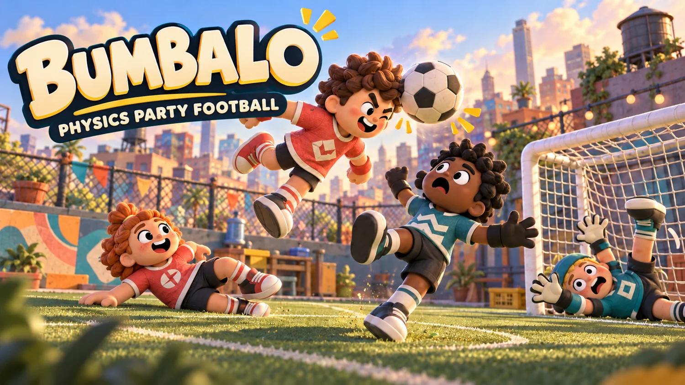
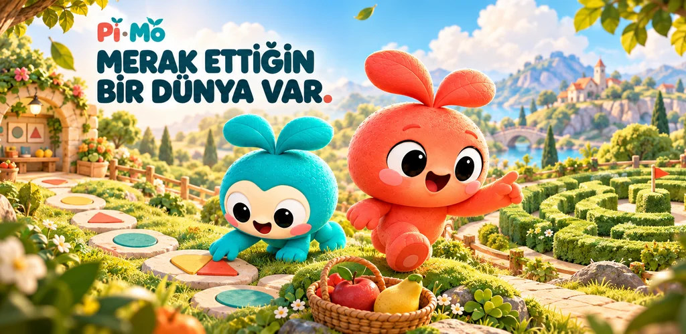
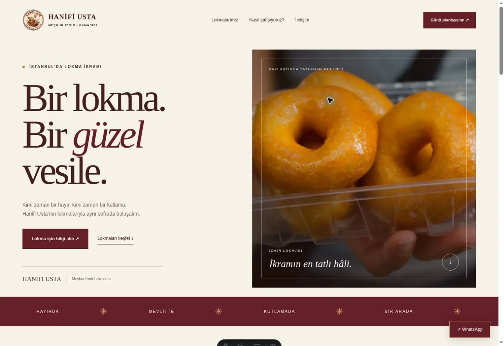

PROJECT / 01
BUMBALO
A physics-based football game project.
Planning and development
Estimated progress
I work in aviation, focusing on the technical receiving and inspection of aircraft components. Outside work, I explore software and digital projects.
I started learning software development through my own experiments. Today I use AI-assisted tools to work on mobile games, websites and new product ideas. Here, I share the progress of my BUMBALO and Pi-Mo game projects alongside my web work. I enjoy trying new approaches and improving what I build step by step.

A physics-based football game project.

An educational mobile game for children.

A website design and development project.
Independent work involving AI, software and digital product development.
Work in progressIf you'd like to get in touch, you can write to me here.